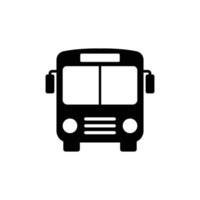

En vehículo
Te contamos cómo llegar a Monte Hermoso con tu vehículo particular. A Monte Hermoso podrás llegar mediante la Ruta Nacional Nº3. Allí, en el kilómetro 605 encontrarás el desvío que te lleva hasta la ciudad. Este desvío es la Ruta Provincial Nº 78 lleva directamente a Monte Hermoso. Una vez que lleguen a la ciudad, pueden seguir las señales hacia el centro o hacia las playas para llegar a su destino.
En colectivo
Te contamos cómo llegar a Monte Hermoso a través de los diferentes servicios de ómnibus. Existen varias empresas de transporte que llegan hasta nuestra ciudad. Todas ellas llegan a la Terminal de Ómnibus Monte Hermoso, ubicada en la Ruta Prov. N° 78 (Tel. 02921- 481993)
- Empresa Plusmar: Buenos Aires – Monte Hermoso
- Empresa Cóndor – La Estrella: La Plata – Monte Hermoso
- Empresa Andesmar: Mendoza, San Rafael y San Juan – Monte Hermoso
- Transporte Lucho: Coronel Dorrego – Monte Hermoso – (02921) -450045 / (0291) 42331036
- Empresa El Villarino: Bahía Blanca, Punta Alta – Monte Hermoso
En combi
Te contamos cómo llegar a Monte Hermoso con los servicios de combis.
- Empresa Fetter Monte Hermoso – Bahía Blanca. Tel. (02921) 481611 / (0291) 4139946 – 5748480 Facebook
- La Patagonia Monte Hermoso – Bahía Blanca. Tel. (0291) 4688750 – 4502211/ (02921) 481880 – Sitio web
- Monte Bahía Bus Monte Hermoso – Bahía Blanca. Tel (0291) 5161650 – Facebook
En tren

Te contamos cómo llegar a Monte Hermoso si viajás en tren. La línea de tren más cercada se encuentra en la ciudad de Bahía Blanca. Para venir en tren deberás arribar en dicha ciudad y luego utilizar algún otro medio de transporte hacia Monte Hermoso como por ejemplo el servicio de combi u ómnibus. Encontrá toda la información en el sitio web oficial de Trenes Argentinos.
- Estación Sud Bahía Blanca: Av. Cerri 750, Tel. 0291 – 4529196
- Empresa Ferrobaires: Buenos Aires – Bahía Blanca – Buenos Aires.
En avión

Te contamos cómo llegar a Monte Hermoso si viajás en avión de línea. Para llegar a nuestra ciudad en avión comercial, el aeropuerto más cercano se encuentra en Bahía Blanca. Para llegar hasta Monte Hermoso deberás arribar en Bahía Blanca y luego utilizar algún otro medio de transporte hacia tu destino fianl como por ejemplo el servicio de combi u ómnibus.
- Aeropuerto Comandante Espora B.Blanca: Tel. 0291 – 4860325 Aerolíneas Argentinas
- Destinos: (AEP) AEROPARQUE, (EZE) – EZEIZA, USHUAIA, MAR DEL PLATA, TRELEW, COMODORO RIVADAVIA